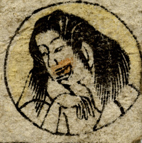

← 图鉴索引

口の周りが赤く、鋭い牙が生えている女。笑っているようにも見える。
出典：親書誌：U426_nichibunken_0238：妖怪十六むさし；ヨウカイジュウロクムサシ／日付：2010／資源識別子：U426_nichibunken_0238_0014_0000
Copyright (c)2010- International Research Center for Japanese Studies, Kyoto, Japan. All rights reserved.